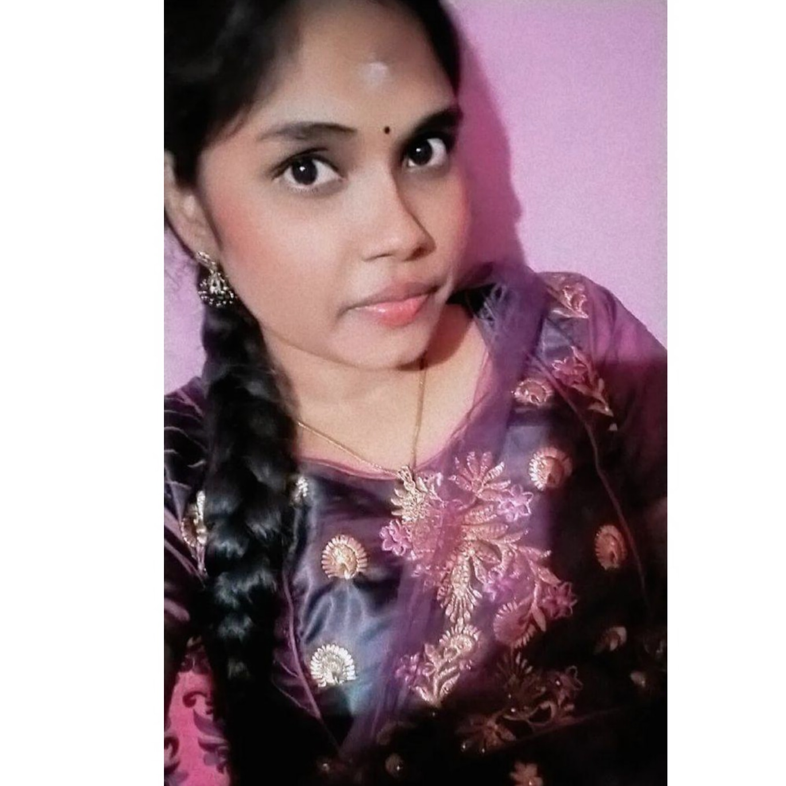

Software Tester | Problem Solver
My name is Divya, and I am a motivated and detail-oriented Manual Tester with a strong understanding of software testing concepts, SDLC, and STLC. I have always been passionate about technology and ensuring that software functions as expected.
During my studies in Computer Science, I developed an interest in software development processes, and I realized that quality assurance plays a crucial role in delivering reliable applications. Software testing excites me because it allows
me to analyze software from a user’s perspective, identify defects, and ensure a seamless user experience. I enjoy problem-solving, thinking critically, and paying close attention to details—skills that are essential in testing. Moreover,
software testing is an ever-evolving field with different methodologies, tools, and automation opportunities, which makes it dynamic and challenging. I see a great career path in testing, where I can start as a Manual Tester i love digging
into software to find bugs and improve quality. While my current focus is manual testing, I’m actively learning automation tools like Selenium to level up my skills. I’m always curious and eager to learn more about different testing strategies,
tools, and technologies to become a better QA engineer. With my knowledge of manual testing, test case design, defect tracking, and tools like JIRA, I am eager to contribute to a team where I can apply my skills, learn continuously, and help
deliver high-quality software.
⦁ Manual Testing, Test Case Design, Defect Tracking, Test Execution
⦁ Testing Tools: JIRA, Bugzilla (basic knowledge)
⦁ Methodologies: Agile, Waterfall, Spiral, V-model
⦁ SDLC & STLC Knowledge
⦁ Operating Systems: Windows,
Linux (basic knowledge)
⦁ Microsoft Office: Excel, Word
⦁ Basics of java and Web technology
Healthy eats
As part of my academic experience, I worked on a project food ordering website called Healthy eats , My responsibilities included designing test cases, executing them, reporting bugs, and documenting test
results using JIRA. This experience helped me gain hands-on exposure to testing processes in a real-world scenario.
Personal Portfolio
The main objective of this project was to design and develop a responsive and user-friendly website that showcases my personal and academic background, projects, certifications, and contact details.
The idea was to build a professional online presence that I could share with potential employers and use as part of my job search in the software testing field.
OpenCart
Performed manual testing on the OpenCart e-commerce platform. Designed and executed test cases for various modules like product listing, cart, and checkout. Logged defects using JIRA and tracked them to closure.
keep-practicing
I’m a self-learned and highly motivated individual, so I focused on gaining hands-on experience through consistent practice. I’ve worked extensively on writing test cases and test scenarios to strengthen
my understanding of different testing techniques. I also understand the importance of documentation in testing, so I’ve made it a point to create clear and professional testing documents—like test case templates, defect reports, and test summary
reports. To apply my skills practically, I’ve tested several open-source and dummy applications, which helped me get a feel for real-world testing workflows and bug tracking. These exercises have really helped me build confidence and improve
the quality of my testing skills.
Shipping Assistant at Lotus Enterprises Limited – 8 Months
I have 8 months of working experience as a Shipping Assistant at Lotus Enterprises Limited. While this role was not directly related to testing, it strengthened my attention to
detail, documentation skills, and ability to work in a structured environment .
📧Email: Divyadillibabu50@gmail.com
📱Phone: +91 9626643678
🔗 LinkedIn:
Divya Dillbabu
💻GitHub:
Divya Dillibabu